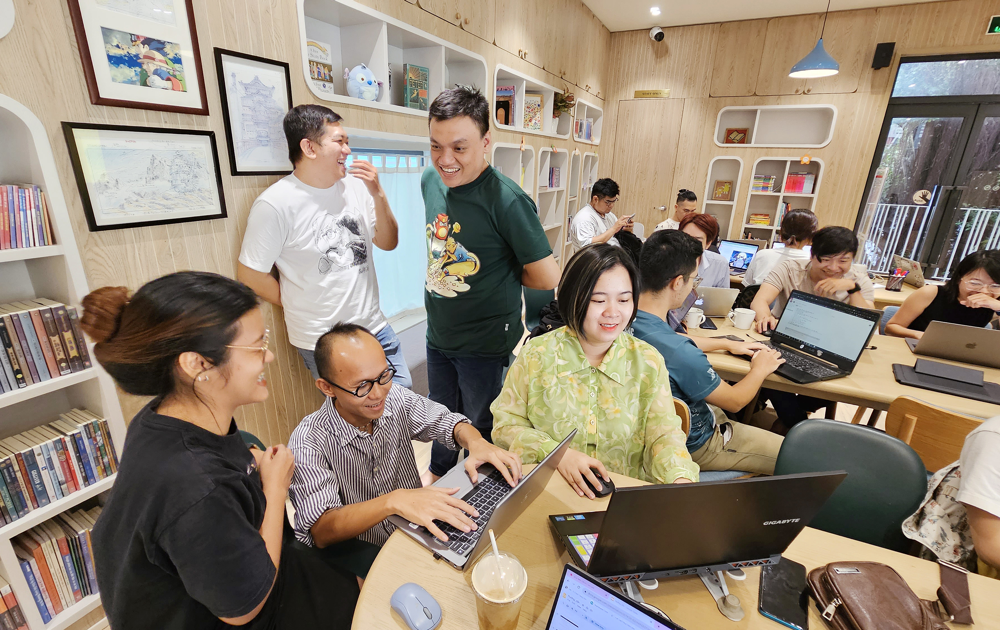
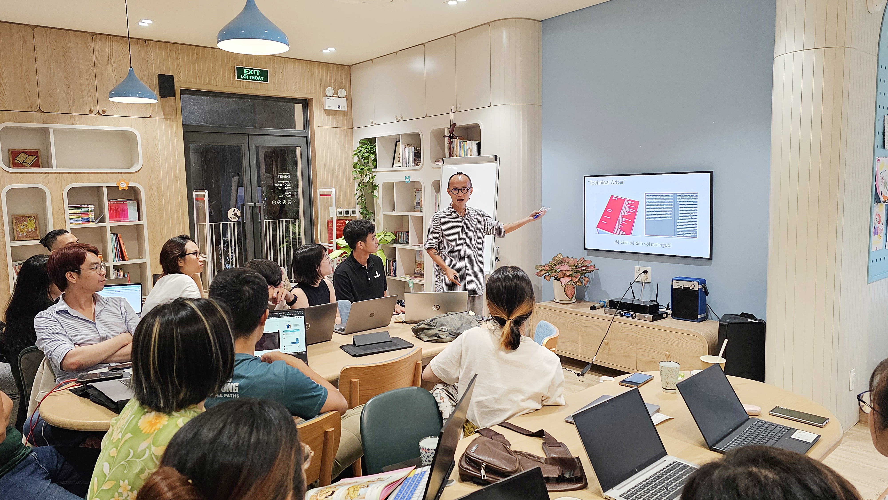
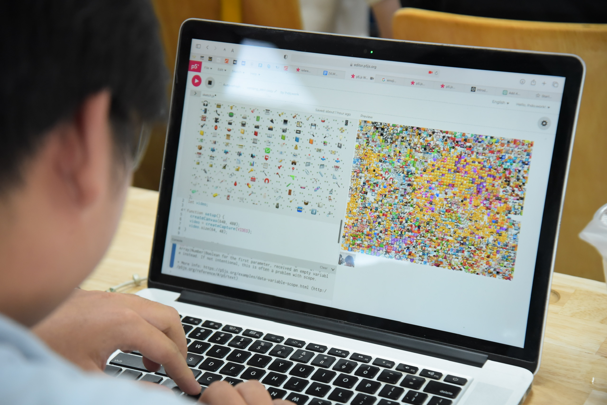
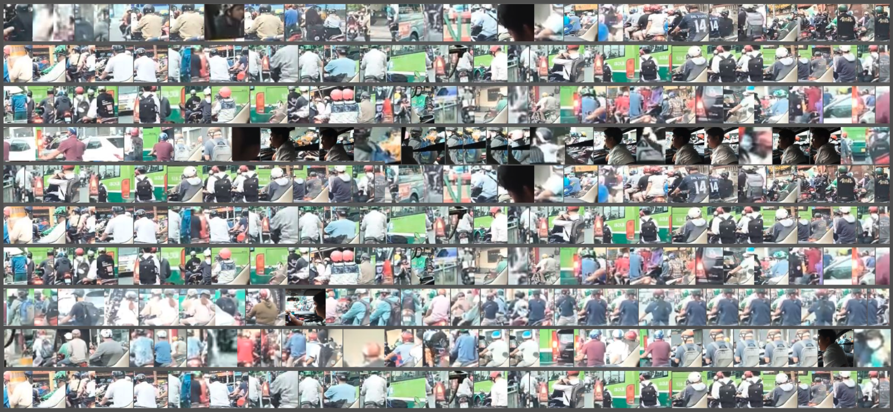

Nào Mình Cùng Lướt 🏄🏻♂️
⤷ 2023 October 28th, 3PM-5PM ⎯ “Hẹn Lướt 002: Tiễn Đưa Công Nghệ” @ 3năm StudioChào Các Tay Lướt! 🏄🏽♀️
Lướt Code chúng tôi là một câu lạc bộ khoa học sau vườn tại Thành phố Hồ Chí Minh. Để lập trình không còn là một bộ môn khó tiếp cận, câu lạc bộ tổ chức các hoạt động nhằm giảng dạy, chia sẻ và hỗ trợ các dự án liên ngành liên quan đến nghệ thuật và công nghệ.
Ở Lướt Code, chúng ta sẽ cùng thoả sức sáng tạo trên tinh thần “học đi đôi với hành”. Có thế, mình mới thấy công nghệ đẹp đẽ, thân tình và không hề xa xỉ. Các hoạt động tại Lướt Code gồm có:
- 🏄🏻♂️ Các buổi gặp gỡ nhằm giới thiệu các tay lướt chưa có căn bản về lập trình với lập trình sáng tạo,
- 🏄🏽♀️ Các khoá học chuyên sâu nhằm trang bị các tay lướt những công cụ thiết yếu để code ra những sản phẩm có ý nghĩa,
- 🏄🏻 Nguồn tư liệu mở tiếng Việt về lập trình sáng tạo.
Qua đó, CLB Lướt Code mong muốn tạo ra một cộng đồng sáng tạo, nơi mà mỗi người đều có cơ hội cất cao tiếng lòng bằng ngôn ngữ chung, là lập trình.
CodeSurfing được khởi xướng bởi Nhân Phan, trong chương trình Processing Fellowship 2023. Là một dự án cộng đồng, Lướt Code trân quý sự hỗ trợ từ Processing Foundation, từ bè bạn ( wedogood, Ivy Võ, Uyên Đồng, Yui Nguyễn, Tùng Anh, Reading Cabin, 3năm Studio), từ cộng đồng nhà mình tại Thành phố Hồ Chí Minh.
Lướt Instagram chúng mình @codesurfing.vn
-




Khoá học đầu tiên ⎯ Cảm Quan Thực Tế 🀥
Cảm Quan Thực Tế là khoá học đầu tiên được Lướt Code phát triển. Xem lập trình là một khu vườn nơi chúng ta tìm lại kết nối với thiên nhiên, khoá học vỡ lòng này sẽ giúp các tay lướt làm quen với lập trình.
Tự thuở sơ khai, đời sống con người đã gắn liền với thiên nhiên. Cơ thể chúng ta luôn liên tục cảm nhận, phản ứng và ghi dấu lên môi trường sống xung quanh. Trong không gian số hiện nay, những âu yếm nguyên thuỷ đó dường như đã bị nuốt chửng bởi cái bóng ngày càng lớn của công nghệ.
Liệu chúng ta có thể hàn gắn những đứt gãy giữa con người, thiên nhiên và công nghệ không? Xuyên suốt khoá học, chúng ta sử dụng p5.js để xây dựng các hệ thống hỗ trợ quan sát, ghi chép và trực quan hoá những biến đổi trong đời sống. Ngoài ra, chúng ta còn học cách tích hợp lập trình vào các chất liệu nghệ thuật mà mỗi người đang thực hành.

[seoulthesoloist]
Mỗi khoá học có 12 buổi, được chia thành 4 học phần:
| PHẦN 1: KẾT NỐI | ⎯ chạm vào máy tính; làm quen với lập trình cùng p5.js. |
| PHẦN 2: TRUYỀN HÌNH | ⎯ nhìn hình ảnh, thấy thế giới; lập trình với array và function. |
| PHẦN 3: TRUYỀN THANH | ⎯ chơi đùa cùng âm thanh; học về lập trình hướng đối tượng và các hiệu ứng chuyển động nâng cao. |
| PHẦN 4: TRUYỀN TIN | ⎯ cảm nhận thế giới vượt ngoài thị giác và thính giác; học cách sử dụng dữ liệu trong lập trình. |
Sử Dụng Tài Liệu Này Thế Nào?
Trên trang web này, các bạn có thể tìm thấy các khoá học mở bao gồm các bài giảng mẫu, và kho tài liệu chọn lọc. CLB Lướt Code hoan nghênh sự tham gia đóng góp của tất cả mọi người vào nguồn tài nguyên cộng đồng này.
👩🏻🔬 Cho người dạy
Mỗi bài giảng mẫu là một buổi học khoảng 90 phút. Bài giảng mẫu mang tính chất khơi mở. Hãy sử dụng trên tinh thần tham khảo và đừng ngại bình giảng theo cách của bạn.
🏄🏻♂️ Cho người học
Nếu tự học, bạn đừng ngại mở rộng phạm vi đề tài theo những mối quan tâm của mình. Trên hành trình đó, bộ tài liệu này sẽ là kim chỉ nam, và bạn không đi con đường này một mình. Lướt Code sẽ có những dịp để bạn kết nối và chia sẻ với những người cùng chí hướng.
Bộ Tài Liệu Có Gì?
Mỗi bài giảng mẫu bao gồm:
| 📌 MỤC TIÊU | Điểm danh những việc cần làm và các bộ kỹ năng cần được tiếp thu trong mỗi buổi học. |
| 🌞 KHỞI ĐỘNG | Hoạt động giúp người học tiếp cận với chủ đề bài giảng, thường được tiếp nối bởi một số thảo luận. |
| 🗣️ GIẢNG | Bài giảng chính, bao gồm các đề xuất dẫn giảng và các đoạn code mẫu. |
| 🏄🏻♂️ LÀM | Hoạt động giúp người học nhanh chóng hệ thống lại kiến thức vừa tiếp thu để tự soi chiếu, tổng hợp và suy ngẫm sau buổi học. Hoạt động này là cốt lõi của khoá học, không nên bỏ qua. |
| 🤹🏻♀️ BÀI TẬP | |
| 📚 ĐỌC THÊM |
⤷ DỰ ÁN ⎯
- Mỗi học phần đều kèm theo một phần Dự Án để người học thực hành. Hướng dẫn chi tiết cho từng dự được đính kèm ở buổi học cuối cùng của từng phần.
- CLB cũng giới thiệu một dự án mẫu để giúp học sinh xác định quy mô dự án cá nhân. Dựa theo những dự án mẫu, chúng mình yêu cầu người học viết một bài giới thiệu về dự án của mình dù lớn hay nhỏ (gồm ý tưởng, phương pháp và kỹ thuật chuyên môn). Đây là thói quen tốt để mỗi người học nâng cao khả năng ghi chú và ý thức trong sáng tạo.
Theo dõi IG codesurfing.club để biết tin ngay khi bài giảng được cập nhật bạn nhé! 🏄🏻♂️
Chào mừng mọi người đến với phần đầu tiên của khoá. Mình sẽ cùng làm quen với các function của p5.js, và cùng ứng dụng để tạo nên các tương tác có chiều sâu với máy tính.
DỰ ÁN 1 . Bức thư tình đầu tiên
arrow_outwardỞ phần này, chúng mình sẽ viết một lá thư có tính tương tác và gửi cho một người nào đó: có thể là người bạn yêu thương hay chính bản thân bạn. Mình học cách sử dụng công nghệ trong một không gian hết sức thân mật. Bạn có thể sử dụng các chất liệu đã làm quen ở các buổi học trước (bao gồm màu sắc, hình dạng, typography) cùng với các hiệu ứng chuyển động và tương tác thông qua con chuột hoặc bàn phím. Ở Buổi 3, các bạn sẽ có thêm thông tin về dự án cuối kỳ này.

Bài tham khảo: "chân dung" ⎯ Một bức thư gửi cho tuổi trẻ của tôi. Nhớ lại mùa hè năm 2017 trên nền thơ Skinny Dipping của Ocean Vương. Thời đại học đã qua đi, nhưng mùa hè năm ấy vẫn thiêu đốt trong tôi. Những kỷ niệm mà tôi càng cố gắng nắm lấy, thì nó càng vụt qua mất trong làn thơ.
⤷ BUỔI 1. Cú Chạm Đầu Tiên
arrow_outward- p5.js là gì? code là gì? ngôn ngữ là gì? thư viện là gì?
- Bức vẽ đầu tiên bằng p5.
- Function: các function có sẵn trong p5.
- Biến, biến, và biến.
- Hệ toạ độ, hình khối, và màu sắc.
- Chuyển động và tương tác với chuột.
- map() & lerpColor()
- Dùng if-condition để điều khiển chuyển động và tương tác
- Tương tác với chuột
- Tương tác với bàn phím
- Hàm random()
- Thực hành ghi chú và code “sạch”
- Tự mình viết function.
- Các phép biển đổi: translate(), scale(), rotate()
- push() & pop()
- Typography trong p5.js
- Vòng lặp: for & while
Từ những thao tác cơ bản ở phần 1, mình sẽ tiếp tục thiết lập những tương tác mang tính cảm quan hơn xoay quanh thị giác. Phải chăng cách máy tính cũng nhìn cũng giống cách con người nhìn? Ở phần này, mình sẽ học cách dùng code để đọc và phân tích hình ảnh. Ngoài ra, mình cũng bắt đầu làm quen với việc tự tạo không gian code "from scratch", chuyên nghiệp hơn sử dụng online editor.
DỰ ÁN 2. Dấu Vết Đô Thị
arrow_outwardỞ dự án cuối kỳ này, người học sẽ dùng camera và/hoặc các thiết bị ghi hình khác để ghi lại những dấu hiệu đặc trưng của nơi mình sống. Sau đó, làm nổi bật các dấu vết đó thông qua sử dụng code.
Bài tham khảo: “Tất Cả Người Lạ Tôi Gặp Bên Bờ Kênh Nhiêu Lộc”. Người, người, và người. Đối với tôi, Sài Gòn, nơi tôi từng lái xe 12km đi làm mỗi buổi sáng, tấp nập (và hỗn loạn) trong dòng người. Mỗi chuyến lái xe như một bộ phim với dàn cast khổng lồ mà không ai làm diễn viên chính. Trong dự án này, tôi sử dụng chương trình nhận diện vật thể lên *footage* của camera hành trình lái vòng quanh kênh Nhiêu Lộc. Chương trình nhận diện ra đâu là con người, tự động cắt hình người đó ra và dàn lên một bức vẽ lớn.
⤷ BUỔI 4. Thao Tác với Hình Ảnh
- Lập trình trên máy-của-mình: text editor, CLI, và mọi thứ mình cần.
- Cấu trúc của một dự án p5: index.html, style.css, và sketch.js.
- 🏄🏻♂️ Thực hành: Tạo nút bấm.
- Thao tác với hình ảnh.
- Thao tác với video.
- 🏄🏻♂️ Thực hành: Làm zine
⤷ BUỔI 5. Từ Pixel Đến Hình Ảnh
- Làm việc với array
- Không gian màu: RGB và HSL.
- Lưới và layout.
- Sáng tác trên chất liệu pixel: loadPixels() & updatePixels().
- Kết nối với webcam.
- 🏄🏻♂️ Thực hành: ASCII Webcam.
⤷ BUỔI 6. Hơn Cả Một Pixel
- Hiểu hình ảnh qua lăng kính machine learning.
- Phân loại hình ảnh.
- Nhận diện vật thể
- Làm một ứng dụng machine learning bằng ml5.js
- Debug & Tối ưu hoá code.
Sử dụng code để khuếch đại các chi tiết âm thanh xung quanh ta. Trong phần này, chúng ta sẽ cùng nhau nghiên cứu về âm thanh, cách xử lý âm thanh, cũng như chuyển hoá âm thanh sang hình ảnh trong p5.js. Ngoài ra, chúng ta cũng đi sâu hơn vào chuyển động, và áp dụng vector và lực để làm hình hoạ chuyển động như thật.
DỰ ÁN 3: Soundscape
arrow_outwardỞ dự án này, người học sẽ cần thu lại những thanh âm ở khu mình sống. Song, mình sẽ dùng lập trình để thể hiện chủ thể của không gian âm thanh đó ở dạng trực quan. Nói cách khác, đã nghe được thì sẽ thấy được.
Con người thích nghi với môi trường nhờ khả năng phân tích những dấu hiệu không thể nhìn hay nghe thấy. Ngư dân dựa vào hải lưu, gió và kinh nghiệm để lèo lái. Nông dân dựa vào lượng mưa và nhiệt độ để canh tác. Ở phần này, người học sẽ được hướng dẫn thiết kế một hệ thống gắn kết code với các thiết bị, nhằm nắm bắt và phân tích các dữ kiện vượt ngoài thị giác và thính giác.
DỰ ÁN 4: Trạm Quan Sát Cá Nhân
arrow_outwardBài tham khảo: Prototype đài quan sát mức gió ở TP.HCM, với tất cả học sinh Lướt Code ⎯ lướt theo chiều gió tại thời điểm hiện tại.
⤷ BUỔI 10. "Đường Ống" Dữ Liệu
- Dữ liệu: Là gì và làm được gì?
- Làm việc với file csv
- Dùng getRow, getColumn, getNum, getString để đọc và trích xuất dữ liệu.
- Lướt qua trực quan hoá dữ liệu.
- Liên kết p5 với Google Sheet
- 🏄🏻♂️ Practice: Thu thập và trực quan hoá dữ liệu của riêng mình.
⤷ BUỔI 11. Chuyện Dữ Liệu
- Dữ liệu có gì để kể cho ta?
- Lặn ngụp vào trong trực quan hoá dữ liệu.
- Lựa chọn bảng biểu và kể.
- Sử dụng dữ liệu thế nào cho hợp pháp?
- 🏄🏻♂️ Thực hành: 50 sắc thái của 1 bộ dữ liệu.
⤷ BUỔI 12. Realtime
- Làm việc với file JSON
- Kết nối p5 với Data API
- Real-time visualization
- Deploy
- Hơn cả dữ liệu: Machine Learning
- Dự đoán với Linear Regression.